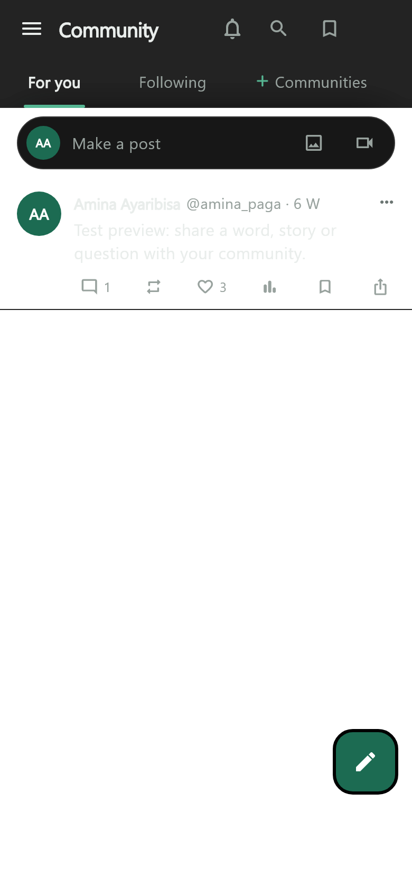
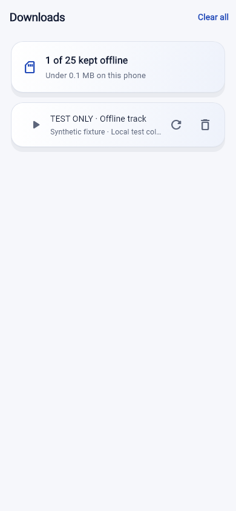
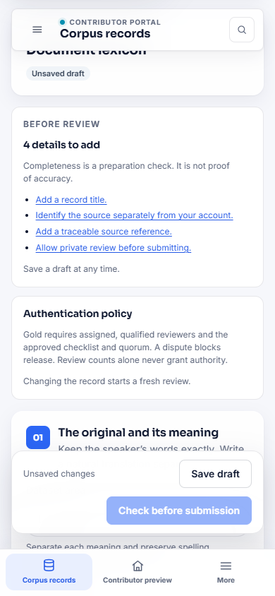

Indigen World 0.1.32 (build 41) brings the recent community, listening and contribution improvements into one Android release. It combines the work previously held in separate development folders with the current GitHub main branch.
Open Community to switch between For You, Following and the communities you have joined. When making a post, choose a searchable topic tag, including Events and Community Updates. Explore keeps its actions visible while a reel plays, and Notifications groups your actual alerts with clearer read and unread states.

Open Downloads and tap a saved track to start a queue from your local files and open Now Playing. Saved artwork stays on the device. Missing, incomplete or damaged files offer a fresh download; files that pass basic checks can also be downloaded again if playback fails. The app checks your current account and offline subscription before playing saved audio. Subscription expiry keeps the files on your device.

Supported contribution forms offer account-specific draft recovery and retain retry information when sending fails. Reviewers can inspect sources and correction history. Contributors can follow feedback through My contributions and continue supported corrections without losing their metadata.

Choose Black in the appearance settings for pure black primary backgrounds. Settings also offers Low-data mode to reduce optional image and video loading until you open media deliberately. Contact Support opens the established email and contact-page options. Existing appearance choices remain available.
The public dictionary and reference guides retain the spelling and grammar books, their printed examples, and all nineteen grammar illustrations. Source links and references help readers inspect where information comes from. Kawuri continues to use eligible source material; its new candidate-index reader remains disabled pending its separate rollout checks.
Indigen World 0.1.32, Android build 41, is available on GitHub with a freshly built, signed Android bundle and checksum file. The consolidated changes have merged into main. A GitHub release does not install an update on existing phones: Google Play submission and rollout are separate. Physical-device audio, Google sign-in return and authenticated production review journeys still need verification. Events and Community Updates require the compatible backend deployment. This Blogger article remains a publication handoff.